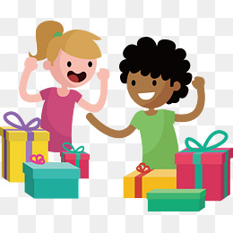

Lors des fêtes de fin d'année, Pâques,...il y a beaucoup de familles qui n'arrivent pas à offrir à leurs enfants un petit repas de fête
et/ou un petit cadeau.
En donnant 1 euro ou plus , vous contribuer à illuminer les visages de ses enfants lors des fêtes de fin d'année 2017.
Happy kids a été fondé en 2017 par les soeurs Alphonsine, qui pendant les fetes de Noel/2016 etaient dans un supermarche et un enfant qui était avec sa mama à la caisse la demande de lui offrir
un joue comme cadeau de Noel, et sa mama n'avait pas les moyen de la l'offrir, l'enfant était vraiment triste que les soeur Alphonsine ont decide de l'acheter pour cette enfant, si on pouraient voir
comment les yeux de cette petite fille brille apres l'avoir reçu et sa mama qui avait des larmes de joie dans ses yeux.
c'est depuis là que les soeur ALphonsine decidant de fonde HAPPY KIDS.
Pour certaines familles, pouvoir tenir jusqu'à la fin du mois financièrement c'est très difficile voire même impossible dans certains cas. Raison pour laquelle à l'occasion des fêtes de fin d'année 2017, noël et nouvel an, j'aimerais bien collecter les fonds pour pouvoir offrir à certaines familles qui n'ont pas les moyens un bon repas de fête et un petit cadeau de noël pour leurs enfants. Voir un enfant sourire ça fait chaud au cœur!
Si le montant collecté le permet, Happy KIds organiser une sortie en accord avec les familles concernées dans un parc d’attraction pour permettre à ces enfants de s'amuser.
Contreparties :
- Pour 5-10 euro offerts, vous recevrez un mail de remerciement d'un des enfants
- Pour 25 - 50 euro offerts , vous recevrez un de remerciement d'un des enfants et sa famille
- Pour 100 euro offerts vous recevrez une carte de remerciements via la poste signée par les enfants
Comme dans son dernier message, Robert Baden-Powell a dit que La meilleure manière d'atteindre le bonheur est de le répandre autour de vous.
En savoir plus sur ces dernière citations, clique ici